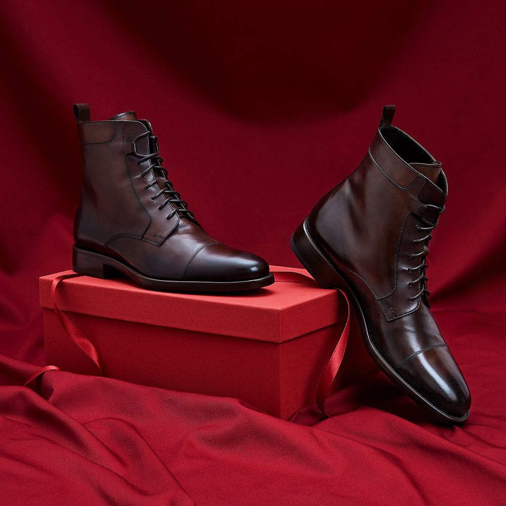
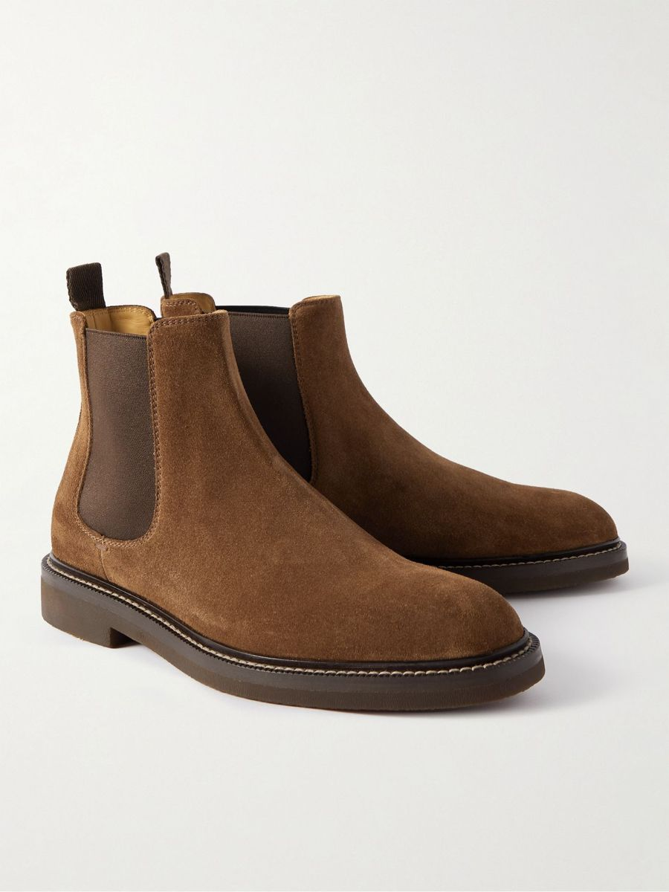
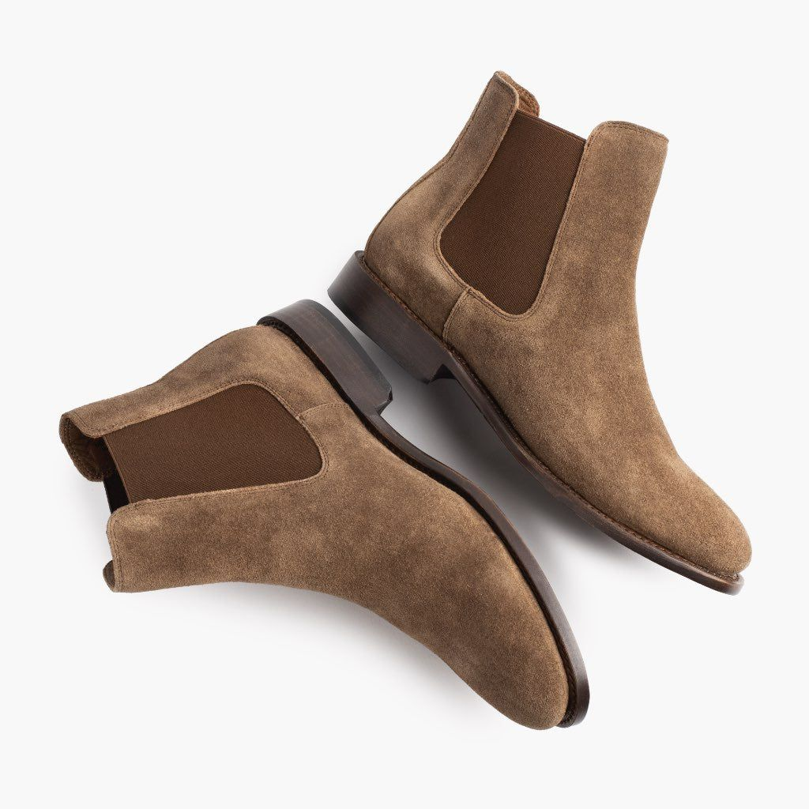
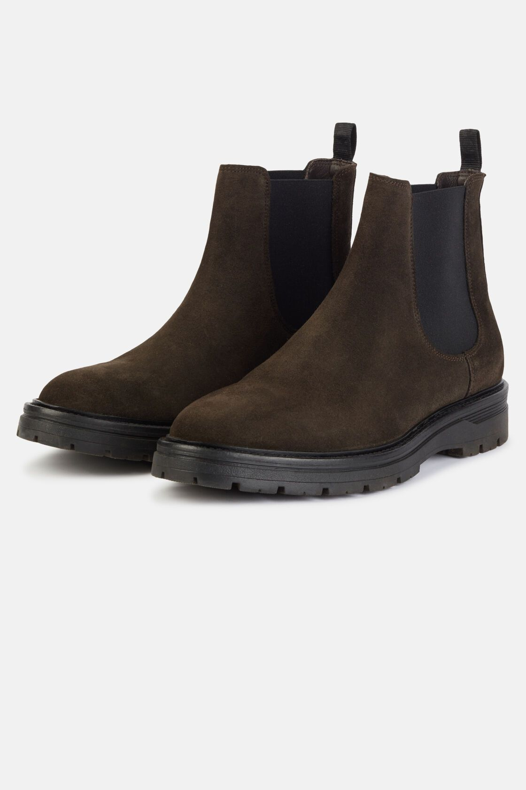
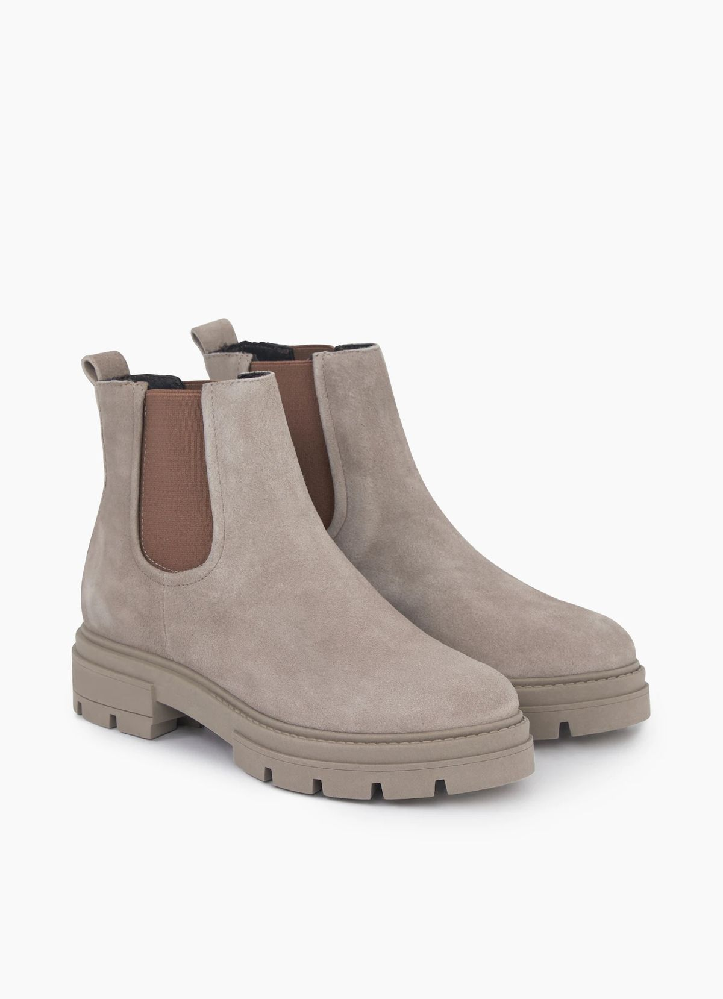

About Us
Since 1968, House of Ruksh has defined excellence in Indian leather craftsmanship. Rooted in heritage and driven by precision, the brand has cultivated a reputation for producing leather of exceptional character, strength, and refinement. Today, as a third-generation enterprise, Ruksh Enterprises stands as a symbol of trust and prestige in global markets — delivering premium leather goods, equestrian products, and footwear that reflect timeless elegance and uncompromising quality.
Our Background
House of Ruksh was founded in 1968 to produce finest quality of Indian leather through selection and tanning of select raw hides and leather products such as harness and saddlery, and finished leather. In 2003, Ruksh entered into a joint venture with an Italian company to manufacture and export riding shoes. Today, the company continues as a third generation enterprise exporting leather goods globally.

Our Factories
- Leather Tannery: Four decades of expertise in tanning premium hides.
- Leather & Textiles: Large collection of equestrian and leather accessories.
- Footwear: Expanded focus on high-quality leather footwear for global markets.
Our Quality Standards
We use state-of-the-art machinery from Italy, Germany & China, follow EN compliance and environmental safety standards, and maintain strict quality control at every step.
Our Products



